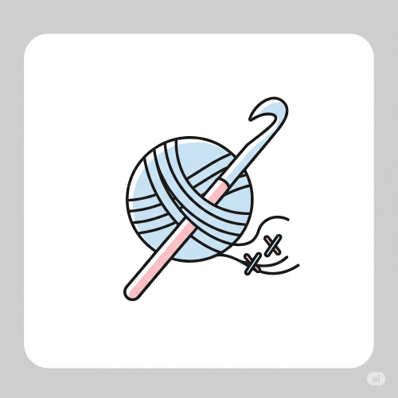
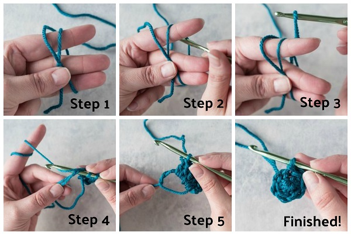

CROCHETING
Meaning of Crocheting
Crocheting is the process of using a single hook and yarn to make fabric by forming loops. It is a handcraft in which yarn is turned into cloth by pulling one loop through another with a crochet hook. It is similar to knitting, but instead of two needles, only one hook is used in crocheting.

Importance of Crocheting
- It helps to train the hands and the eyes.
- It helps to develop patience and neatness.
- It can be used to make useful items for the home.
- It is a way of making money.
- It encourages creativity in young people.
- It helps to reduce waste, as old materials can be turned into useful items.
Materials and Tools Used in Crocheting
- Yarn or Thread – This is the material used for crocheting.
- Crochet Hook – This is a metal or plastic tool with a hooked end used to pull the yarn through loops.
- Scissors – Used to cut the yarn.
- Measuring Tape – Used for taking measurements when crocheting clothes or other items.
- Yarn Needle or Darning Needle – Used for joining pieces together or finishing off loose ends.
- Stitch Markers – These help to keep track of the rows or rounds.
Note: Crochet hooks come in different sizes. Thicker yarns need bigger hooks.
Basic Crocheting Stitches
- Chain Stitch – This is the first stitch in crocheting. It is used to begin the work.
- Slip Stitch – This is used to join stitches together.
- Single Crochet – A simple stitch that makes a firm and solid fabric.
- Double Crochet – A taller stitch that makes the fabric softer and looser.
By combining these stitches, different designs and patterns can be made.
Steps in Crocheting
The process of crocheting involves a series of steps to turn yarn into a finished fabric.

- Start with a slip knot on the hook.
- Make a chain of stitches.
- Work other stitches (single or double crochet) into the chain.
- Continue row by row or round by round.
- Fasten off at the end of the work.
- Use a yarn needle to weave in loose ends and make the work neat.
Examples of Items Made Through Crocheting
Crocheting can be used to make many useful and beautiful items such as:
- Table mats.
- Caps and hats.
- Scarves.
- Small bags or purses.
- Pillow covers.
- Baby clothes.
- Dish cloths.
- Wall hangings and decorations.
Designs in Crocheting
Crochet work can be done in a straight line or in circles. Some designs are square, round, or even flower-shaped. Designs can be made more beautiful by using different colours of yarn. Before starting, it is good to draw the design and plan how to carry it out.
Tension or Gauge
Gauge is how tight or loose your stitches are. If your work is too tight, it may shrink. If too loose, it may be too soft or weak. That is why practice is important.
Crocheting as a Business
Crocheting can be a good source of income. People sell crocheted items like table covers, handbags, baby clothes, and decorations. It is a good skill for self-reliance.
Health and Safety for Crocheting
- Sit properly when crocheting.
- Take breaks to rest your hands and eyes.
- Do not run or play with crochet hooks.